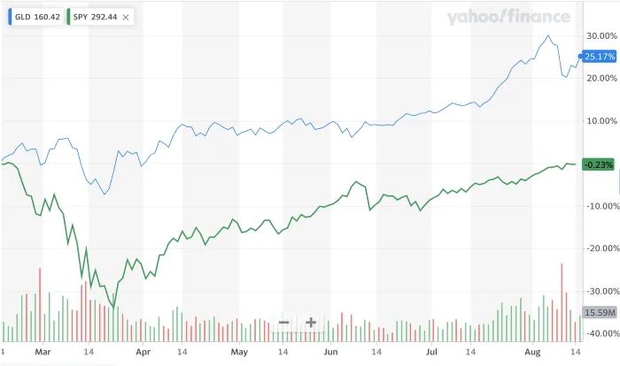

Gold is often viewed as a safe haven asset or a hedge against market turmoil, currency depreciation, and other economic or political events. At the beginning of the COVID pandemic, S&P 500 experienced a sharp drop before returning to pre-COVID level several months later. At the same time, SPDR Gold Shares (GLD) had gained more than 25% from February to August 2020.

To gain a long or short exposure to gold, there are a number of related products, including gold exchange traded funds (ETFs), gold miner stocks, and gold futures.
However, the price of gold does not exist in a vacuum. Gold must be mined, and the companies that perform this mining process are themselves traded companies. This gives another avenue for investors to achieve exposure to gold, while allowing them to determine investment decisions through standard equity research techniques.
Even though general equity sector ETFs are by far the largest by market capitalization, gold miner ETFs are some of the most popular vehicles for short-term trading available on the market. Market observations suggest that they are heavily driven by speculative traders seeking gold-like exposure. Therefore, understanding the underlying factor dynamics of gold miner ETF returns are practically useful for analyzing popular trading strategies, such as pairs trading.
A summary of work first published on medium.com.